action { batter -> BB }
/* The next batter hits a ball toward the shortstop, who catches it and throws it to the second baseman to get the runner out. The fielder makes a mistake by dropping the ball.*/
action { batter -> O6 , runner1 -> 6E4 }

The abbreviation “O” is usually used to confirm that the batter-runner’s advance to first base occurred as a result of the fielder’s choice to put out a preceding runner. An essential prerequisite is that, during the action, the chosen runner is put out or saved only by an error.
In fact, “occupied ball” always follows a fielding chance, whether the outcome is a putout or an error.
The “O” for “occupied ball” is followed by the number of the fielder who, once the hit ball has been recovered, initiates the alternative play.
Example 52: The “O6” noted in the first base square clearly indicates that if the shortstop had played for the batter-runner, he would certainly have been put out.
| WBSC | Translation in the scoring tool | Tool |
|---|---|---|
|
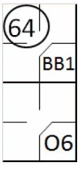 |
/* The first batter wins first base, a 'base on ball' */ action { batter -> BB } /* The next batter hits a ball toward the shortstop, who catches the ball and throws it to the second baseman to get the runner out */ action { batter -> O6 , runner1 -> 64 } |
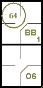 |
Example 53: The forced runner reaches base safely thanks to a catching error by the second baseman receiving a throw from the shortstop. In both cases the occupied ball notation is used after a fielding chance.
| WBSC | Translation in the scoring tool | Tool |
|---|---|---|
|
|
/* The first batter wins first base, a 'base on ball' */ action { batter -> BB } /* The next batter hits a ball toward the shortstop, who catches it and throws it to the second baseman to get the runner out. The fielder makes a mistake by dropping the ball.*/ action { batter -> O6 , runner1 -> 6E4 } |
|
Example 54:
With less than two out and runners on first and third, the third batter hits a fly ball to the center fielder,
who muffs an easy catch.
While the lead runner scores, the outfielder recovers the ball and assists the shortstop in putting out the next
runner, who is forced to advance by the error.
Since OBR 9.12(d)(4) states that no error is charged when a runner is subsequently forced out, the batter-runner’s
advance to first base is recorded as an occupied ball.
The sacrifice fly in the example indicates that the run would have been scored even without the outfielder’s error.
| WBSC | Translation in the scoring tool | Tool |
|---|---|---|
|
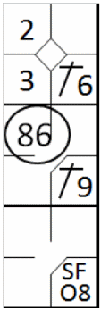 |
/* the first batter hits a hit on the short stop */ action { batter -> 1B6 } /* The next batter hits a single to right field, the runner advances two bases */ action { batter -> 1B9 , runner1 -> ++ } /* The next batter hits a fly ball to center field, but it misses. The fielder recovers the ball and throws it back to stand down to put out the runner coming from the second base. The runner on the third base scores the run. */ action { batter -> SFO8 , runner1 -> 86 , runner3 -> + } |

|
This is not the case for the Example 55: where the absence of any notation of the sacrifice fly and the error for the arrival on home base demonstrates clearly that without the error no run would have been scored [OBR 9.12].
| WBSC | Translation in the scoring tool | Tool |
|---|---|---|
|
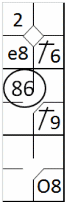 |
/* the first batter hits a hit on the short stop */ action { batter -> 1B6 } /* The next batter hits a single to right field, the runner advances two bases */ action { batter -> 1B9 , runner1 -> ++ } /* The next batter hits a fly ball to center field, but it misses. The fielder recovers the ball and throws it back to stand down to put out the runner coming from the second base. The runner on the third base scores the run. */ action { batter -> O8 , runner1 -> 86 , runner3 -> e8 } |

|
Example 56:
With no men out and bases full, the third baseman recovers the ground ball hit by the fourth batter and, after
touching his base, assists the second baseman in closing the double play.
The batter-runner’s advance to first base is noted with the “occupied ball” symbol, along with “GDP” for grounded
into double play.
The first runner’s advance is entirely legal although the run cannot be counted as having been batted in.
| WBSC | Translation in the scoring tool | Tool |
|---|---|---|
|
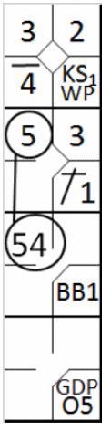 |
/* The first batter reaches base on a loose strike (wild pitch). */ action { batter -> KSWP } /* The next batter hits a single to the pitcher, the runner advances */ action { batter -> 1B1 , runner1 -> + } /* The next batter reaches first base on a 'base on ball', the runners advance */ action { batter -> BB , runner1 -> + , runner2 -> + } /* The next batter hits a ground ball toward the third baseman, who touches his base. He then throws the ball to the second baseman, who puts out the runner coming in from first. The runner on third takes advantage to score. */ action { batter -> GDPO5 , runner1 -> 54 , runner2 -> 5 , runner3 -> + } |
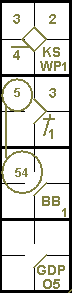 |
Example 57:
The batter-runner, after having reached first base on fielder’s choice, takes advantage of the ongoing rundown
play to continue to second.
This additional advance is noted with an arrow.
| WBSC | Translation in the scoring tool | Tool |
|---|---|---|

|
/* The first batter reaches base on a loose strike (wild pitch). */ action { batter -> KSWP } /* The runner takes advantage of a 'pass ball' to advance to the second base */ action { runner1 -> PB } /* The batter hits a ball to the catcher, who relays to third base to get the runner out; a trap eliminates the runner.*/ action { batter -> O2+ , runner2 -> 2565 } |
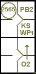 |
In the examples given hitherto, the symbol for “occupied ball” has onlybeen used to account for a batter-runner’s advance to first base. We shallnow look at how it may be used to account for advances by base runners.
Example 58:
The first batter reaches base thanks to a bungled catch by an outfielder, and is forced to second when the next
batter hits a single.
On a batted ball from the third batter, the shortstop assists the third baseman in putting out the first runner.
In this case also, the way the action developed gave the scorer the absolute certainty that the fielder could have
put out the runner who was forced to second, rather than the first runner. For this reason, the runner’s advance to second
base is recorded as a fielder’s choice, rather than with the batting order number of the batter.
| WBSC | Translation in the scoring tool | Tool |
|---|---|---|
|
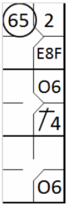 |
/* The first batter hits a ball to center field, the fielder makes a mistake and
catches it */ action { batter -> E8F } /* The next batter hits a hit on second base, the runner advances */ action { batter -> 1B4 , runner1 -> + } /* The next batter hits a ball to the shortstop, which relays to third base, who then puts out the runner coming from second. The runner on first and the batter take advantage to advance.*/ action { batter -> O6 , runner1 -> O6 , runner2 -> 65 } |
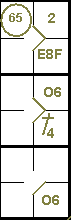 |
There is another kind of occupied ball, as in “KO2”.
Example 59:
With runners on second and third, the catcher drops the third strike but recovers it in time to assist the
pitcher to put out the runner who has just left third base.
The batter-runner arrives safely on first base, as indicated by “KS1 O2” (assuming that this is the first
strikeout for the current pitcher).
The advance by the runner on second is noted with ‘O2’ as the provision of rule 9.13(b) Comment.
| WBSC | Translation in the scoring tool | Tool |
|---|---|---|
|
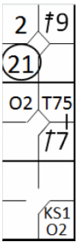 |
/* The first batter hits a double to right field */ action { batter -> 2B9 } /* The next batter hits a single to left field and takes advantage of a throw to reach second base; the runner on second advance */ action { batter -> 1B7 T75 , runner2 -> + } /* The next batter, on a released third strike, wins the first base because the catcher decides to get out the runner coming from third base.*/ action { batter -> KSO2 , runner2 -> O2 , runner3 -> 21 } |
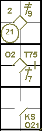 |
Example 60:
The batter hits a ground ball to the third baseman, who tags the runner on third as he tries to retouch base.
In the encounter, however, the ball is dropped and the umpire calls “Ball on the ground”. The runner on third returns
safely to the base and the third baseman is charged with an error. The error is decisive and must be noted in small
characters in the third base square.
| WBSC | Translation in the scoring tool | Tool |
|---|---|---|
|
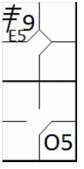 |
/* The first batter hits a triple to right field */ action { batter -> 3B8 } /* The next batter hits a ball to third base; the fielder should have put out the runner who wasn't moving.*/ action { batter -> O5 , noAdvance on runner3 -> E5 } |
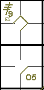 |
This type of error will always be encountered on third or second base, and should not be confused with an error that prolongs a time at bat which, although it is recorded in the same manner, is written in the first base square.
ATTENTION: To account for a runner’s advance on a fielder’s choice rather than on a hit, the scorer must be absolutely convinced that an alternative play on that player would have led to his being put out.